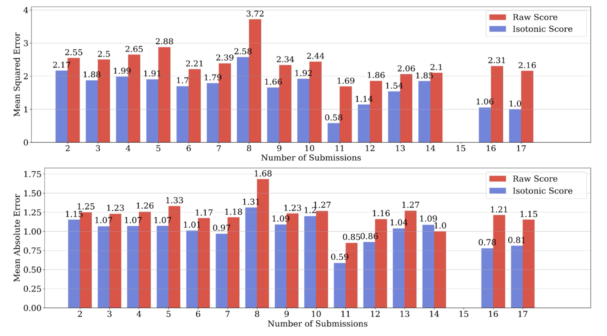

In recent years, AI conferences have seen an exponentially increasing number of submissions. In contrast, the pool of high-quality reviewers has grown much more slowly, raising widespread concerns about the quality of peer review. A research team from the University of Pennsylvania investigated an underexplored approach to improving review quality: author self-rankings of multiple submissions to the same AI conference. Grounded in game-theoretic reasoning, the team hypothesized that self-rankings are informative because authors have a unique understanding of their own work. To test this hypothesis, the team conducted a large-scale experiment at the International Conference on Machine Learning (ICML) 2023, in which 1,342 researchers self-ranked 2,592 submissions by perceived quality. The team conducted an empirical analysis showing how author-provided self-rankings can be leveraged to improve peer review at AI conferences via the Isotonic Mechanism. Based on these results, the team proposed several potential applications of author self-rankings, some of which have been incorporated into the ICML 2026 review process (see https://blog.icml.cc/2026/01/12/introducing-icml-2026-policy-for-self-ranking-in-reviews/).
Where does this framework come from?
The starting point is a simple observation: authors typically have the best knowledge of their own papers but are often reluctant to share their relative preferences truthfully. This idea was formalized as the Isotonic Mechanism, a computationally efficient approach for improving the accuracy of noisy review scores by incorporating author self-rankings of their submissions.
The Isotonic Mechanism operates as follows. Consider an author who submits n papers to a conference. The mechanism asks the author to rank these submissions in descending order of perceived quality, denoted by π. Given the (average) raw review scores y for the n submissions, the Isotonic Mechanism outputs calibrated scores r by minimizing the Euclidean distance between y and r, subject to the constraint that r is consistent with the author's ranking. Formally, this convex optimization problem is equivalent to isotonic regression. For example, if y=(8,7,4,3) and (π(1),π(2),π(3),π(4))=(1,3,2,4), then the calibrated scores are (8,5.5,5.5,3).
Under this mechanism, the pre-rebuttal review scores are then calibrated to be consistent with these self-rankings. The team shows that authors are incentivized to report their rankings truthfully, because truthful reporting maximizes their expected utility. Building on this finding, the team conducted a large-scale experiment at ICML 2023.
Community surveys
The ICML 2023 survey was conducted on OpenReview, which hosted the peer review process for ICML 2023, in conjunction with OpenRank.cc, a platform the team developed to implement the experiment. The survey was anonymous, GDPR-compliant, and administered after the full-paper submission deadline. Immediately after this deadline, authors with multiple submissions were asked to provide self-rankings by ordering their papers according to perceived quality and significance. Once pre-rebuttal review scores became available, the team computed a calibrated score for each submission using the Isotonic Mechanism. This process produced a rich dataset of self-rankings from 1,342 authors, covering 2,592 ICML 2023 submissions, along with their official review scores and acceptance decisions.
Calibrated scores better reflect submission quality
The team first compared the outputs of the Isotonic Mechanism (the calibrated scores) with the pre-rebuttal review scores in terms of how accurately they reflect submission quality. To do so, one needed a proxy for ground-truth submission quality. Because each submission typically receives multiple reviews, the team used the average of the remaining review scores as a proxy for the ground-truth expected review score when evaluating an estimator applied to a single randomly selected review score. The team found that the Isotonic Mechanism substantially reduces proxy estimation error, as measured by mean squared error and mean absolute error. Moreover, the improvement becomes more pronounced as the number of submissions per author increases.

This dependence suggests that having more author self-rankings can lead to greater error reduction under the Isotonic Mechanism. Because the change in proxy estimation error is an unbiased estimator of the change in ground-truth estimation error, one can construct confidence intervals for the reduction in ground-truth squared error. The team observed substantial decreases that are statistically significant at the 99% confidence level.

Applications
The team's first application has been incorporated into the ICML 2026 review process. Immediately after the full-paper submission deadline, authors will receive a request to provide self-rankings by ordering their submissions according to perceived quality and significance. The team will compute calibrated scores using the Isotonic Mechanism and, once pre-rebuttal review scores are available, compute the discrepancy between the calibrated scores and the pre-rebuttal review scores.
ICML 2026 will use the absolute value of this discrepancy as a signal: submissions with large discrepancies are those for which authors disagree with the reviewers. To keep the signal appropriately coarse, a three-level discrepancy indicator (High, Medium, or Low) will be shown only to area chairs (and not to reviewers). Area chairs may use this indicator to prioritize follow-up actions, such as recruiting additional reviews or re-examining the existing reviews. The goal is to provide a pragmatic measure of potential review-quality concerns and thereby support an efficient allocation of area-chair attention.

The team also proposes an additional application for best paper award selection. ML/AI conferences typically select a small number of papers to receive awards. The process often begins by forming a shortlist, consisting of papers with high average review scores or those nominated by area chairs. A selection committee then carefully reviews the shortlisted papers to identify award recipients.
In this context, author self-rankings could be made visible to a small number of program chairs who are not on the selection committee. The selection committee would continue to rely on its expertise and deliberate without access to the author-provided self-rankings. After the committee submits its recommendations, the program chairs could then scrutinize the proposed awardees and raise flags if a recommended paper received low self-rankings from its authors, suggesting that the committee may want to gather additional evidence before finalizing the award decision.
Discussion: perspectives and future directions
Koyejo and Haupt praise the authors for their "empirically grounded and pragmatic" approach, specifically endorsing their "cautious" recommendation to limit the mechanism's initial use to low-stakes tasks like oversight. The discussants view this measured strategy as "warranted and scientifically prudent," allowing the community to evaluate the tool while respecting the "high stakes of conference decisions" that shape researchers' careers. Regarding equity, the commentators note that the current mechanism creates an "asymmetry" by providing "greater protection against noisy reviews" to established authors with many submissions while leaving junior researchers with "residual uncertainty." To address this, they suggest developing "algorithmic variants" that distribute benefits "more uniformly across the author population." Additionally, they encourage "longitudinal studies" to observe "multi-year learning effects" as the community adapts to these new incentives over time.
Wang and Shi congratulate the authors on a "comprehensive and insightful empirical investigation," acknowledging the study as a "valuable contribution" that addresses the "noisy and low-quality reviews" hampering the field. They validate the original findings, noting that the empirical results clearly demonstrate that leveraging author rankings "yields much smaller mean squared and absolute errors" than relying on raw review scores alone. To address potential "fairness concerns" regarding newer researchers and the risk of authors "gaming the system," the discussants suggest an alternative approach: "leveraging ranking information from reviewers." They argue that this method is "inherently fair regardless of the number of submissions per author" and demonstrate via simulation that "combining ranking information from both reviewers and authors" ultimately yields the most accurate evaluation of submission quality.
Zhang and Li commend the study as "carefully designed and empirically grounded," noting that the "deliberately conservative" mechanism successfully limits strategic manipulation while proving that author self-assessment is "intuitive and empirically well supported." Looking forward, Zhang and Li suggest adapting the mechanism to journal settings by leveraging "authors' past publications" or "revision self-assessment" where simultaneous submissions are rare. Furthermore, they advocate for "randomized controlled trials" to test "reviewer recognition and reward" systems, such as "public badges", to ensure they causally improve "review timeliness" and quality rather than just correlating with them.
Meng commends the work as a pioneering effort that applies statistics to address a severe practical challenge in the machine learning community: an overwhelmed peer review system. He highlights the cleverness of the proposed author-assisted scoring mechanism, which asks authors to provide relative rankings of their own submissions. Meng specifically appreciates how this unconventional approach pushes the academic community beyond familiar comfort zones, successfully bypassing the critical shortage of reliable, high-quality reviewers, whom he terms "Swiss-watch volunteers", by creatively leveraging authors' own incentive structures. He proposes a rigorous data science endeavor, spanning experimental design and causal inference, to deeply study these nuanced author incentive structures and how hidden motives might introduce noise into the review process. Furthermore, to address the broader peer review crisis, Meng advocates for the development of collaborative "Human+AI" editorial teams, suggesting an "Appraise, Generate, Integrate" (AGI) workflow where AI serves as an assistant to provide rapid second opinions and refine language, thereby reallocating scarce human effort toward the highest-value scientific judgments.
Wang and Ren commend the paper as an "important and timely study" that addresses the severe strain placed on the ML/AI peer review system by exponential submission growth. They praise the proposed mechanism for demonstrating that calibrating reviewer scores with authors' self-rankings yields "more accurate assessments than raw scores alone," serving as a "valuable tool for reducing noise" in the evaluation process. They specifically appreciate the authors' cautious framing, agreeing that appropriately limiting the mechanism to "low-risk uses", such as assisting Area Chair oversight, informing award decisions, and recruiting emergency reviewers, helps mitigate the risks of strategic manipulation. They emphasize that the mechanism's inherent biases, such as its potential to disproportionately favor senior authors with multiple submissions, require further analysis regarding internal lab dynamics and participation patterns. They propose a "phased deployment" strategy for future implementations: first making self-rankings mandatory to mitigate self-selection bias, and then gradually introducing controlled interventions to deeply analyze strategic behaviors. Furthermore, they suggest a broader, more transformative shift to "separate dissemination from evaluation." They envision an open ecosystem where papers are published to open repositories for continuous community review, author-calibrated scores guide readers, and reviewers earn reputation or "karma" based on the long-term predictiveness of their feedback, which is an evolution they stress is urgently needed to safeguard the system against the growing influx of generative AI submissions.
Bengio and Zhang highlight the "powerful synergy between ML and statistics" illustrated by this paper, praising the authors for proposing a "novel path" that utilizes author insights to improve review quality. The commentators note that the study sets a "high standard for future work" by demonstrating, through a large-scale experiment, how statistical tools can solve modern socio-technical challenges. For future research, the discussants suggest expanding the mechanism beyond a single quality score to "elicit author opinions along multiple axes," such as "novelty," "rigor," and "predicted long-term impact." Additionally, they recommend "fusing" these insights with other information sources, for instance asking authors to rank current submissions against their "previously published papers", to anchor evaluations and increase information density.